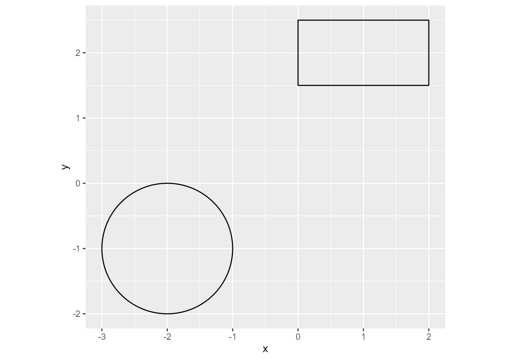

![]()
library(ggdiagram)
library(ggplot2)I am pleased to announce that ggdiagram has been published on CRAN. The package site has many vignettes, but I will give a brief introduction here as well.
The ggdiagram package has functions to create a variety of graphical objects:
- points
- lines and arrows
- shapes
- text
Objects created in ggdiagram can be inserted into a standard ggplot2 pipeline.
ggplot() +
coord_equal() +
ob_circle(x = -2, y = -1) +
ob_rectangle(x = 1, y = 2, width = 2)

There is nothing wrong with the code in Figure 1, but it could have easily been written with standard ggplot2 code. That is, the ggplot2 ecosystem already has the ability to display points, lines, shapes, and text. Why do we need a new package? The grammar of graphics is optimally designed to display data. After the graphical objects are made, it is not easy to use features of those objects to make new graphical objects. For example,
- Where is the midpoint of a line segment?
- Where do a circle and a rectangle intersect?
- Where is the leftmost point of a group of rotated ellipses?
The ggdiagram package allows users to identify features from objects to create new objects.
In Figure 2, the ggdiagram function sets the ggplot2 theme (theme_void by default), as well as the font size and font family of the labels. Circle B is placed at a 20-degree angle from circle A, with 2 units of separation between them. A connecting arrow is placed between the two circles, with 2 points of resection. A label (.56) is placed at the midpoint of the arrow segment.
Note that in Figure 2, variables A and B are defined in the middle of the pipeline. In ggplot2 code, any variable assignments for variables that are to be used later in the pipeline can be enclosed in curly braces {}.
ggdiagram(font_size = 20) +
{
A <- ob_circle(label = "A")
} +
{
B <- ob_circle(label = "B") |>
place(from = A,
where = degree(20),
sep = 2)
} +
connect(
from = A,
to = B,
label = ob_label(".56"),
resect = 2
)Automation
Placing objects one at a time can become tiresome if the there are repetitive elements. The ggdiagram package has a number of methods to automate code. In Figure 3, we create a path diagram with three sets of objects:
- A circle of radius 1.5, with the label “A”
- A horizontal array of 4 indicator variables (as superellipses or squircles) 4 units below circle A, labeled A1 through A4, with a separation of .4 units between the variables.
- Arrows from circle A to the four indicators with coefficients aligned horizontally.
ggdiagram(font_family = "Roboto Condensed", font_size = 32) +
{
A <- ob_circle(
radius = 1.5,
label = ob_label("*A*", size = 64, nudge_y = -.1)
)
} +
{
a4 <- ob_ellipse(m1 = 10) %>%
place(A, where = "below", sep = 4) %>%
ob_array(k = 4, label = paste0("*A*~", 1:4, "~"), sep = .4)
} +
connect(
from = A,
to = a4,
resect = 2,
label = ob_label(
round_probability(c(.75, .87, .92, .67)),
label.padding = margin(t = 3),
angle = 0,
size = 20
)
)@set_label_y()Code can be shortened considerably with for loops, lapply, or map functions from the purrr package. The map_ob function is a specialized version of purrr::map that unbinds the elements of an object, applies a function to each one, and binds the results into a single object. If multiple objects of different types are returned in a list, as they are here, they are consolidated into a single ob_shape_list.
In Figure 4, six latent variables are arranged in a circle. Using map-ob, the indicators for each latent variable are created, along with their connecting arrows.
If this seems like a lot of code, imagine what it would take to create 30 objects, 30 labels, and 39 arrows line by line!
# Latent variables
k <- 6
# labels/id
id <- LETTERS[1:k]
# Degree positions
theta <- seq(0, 360, length.out = k + 1)[1:k]
# Fills
my_colors <- class_color(hue = theta + 90, saturation = .25, brightness = .55)
# Indicators per variable
j <- 4
# All unique pairs of latent variables
path_connections <- combn(id, 2)
ggdiagram(font_family = "Roboto Condensed", font_size = 20) +
{
# latent variables
l <- ob_circle(
ob_polar(degree(theta + 90), r = 3.37),
label = ob_label(
id,
size = 40,
nudge_y = -.1,
fill = NA,
color = "white"
),
radius = 1,
id = id,
fill = my_colors,
color = NA
)
} +
# Connect each unique pair of latent variables
connect(
l[path_connections[1, ]],
l[path_connections[2, ]],
resect = 2,
color = l[path_connections[1, ]]@fill
) +
{
# Make indictors for each latent variable in l
map_ob(l, \(ll) {
# Get the angle
th <- ll@center@theta
# Get the color for latent variable
ll_fill <- class_color(ll@fill)
# Make color gradient for observed indicators
cc <- seq(-180 / k, 180 / k, length.out = j) * .6
o_fill <- class_color(
hue = ll_fill@hue + cc,
saturation = ll_fill@saturation * .9,
brightness = ll_fill@brightness * 1.1
)
# Subscripts
i <- seq(j)
if (th@positive < degree(180)) {
i <- rev(i)
}
# Make observed indicator variables
o <- ob_ellipse(m1 = 15, a = .75, angle = th) |>
place(from = ll, where = ll@center@theta, sep = 1.45) |>
ob_array(
k = j,
where = th + degree(90),
sep = .2,
fill = o_fill,
label = ob_label(
paste0(ll@label@label, "~", i, "~"),
nudge_y = -.05,
fill = NA,
color = "white"
)
)
# Connect latent variable to observed indicators
a <- connect(ll, o, resect = 2, color = o@fill)
list(o, a)
})
}Citation
BibTeX citation:
@misc{schneider2025,
author = {Schneider, W. Joel},
title = {Announcing Ggdiagram, a Ggplot2 Extension for Making Diagrams
Programmatically},
date = {2025-08-19},
url = {https://wjschne.github.io/posts/announcing-ggdiagram/},
langid = {en}
}
For attribution, please cite this work as:
Schneider, W. J. (2025, August 19). Announcing ggdiagram, a ggplot2
extension for making diagrams programmatically. Schneirographs.
https://wjschne.github.io/posts/announcing-ggdiagram/